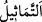

dediler.
62. “Bunu ilâhlarımıza sen mi yaptın ey İbrahim?” dediler.
63. “Belki de bu işi şu büyükleri yapmıştır. Hadi onlara sorun; eğer
konuşuyorlarsa!” dedi.
“Andolsun biz İbrahim’e daha önce” yâni Mûsâ ve Hârun’a Tevrât’ı vermeden önce
“rüşdünü vermiştik.” “er-Rüşd”, “el-ğayy (doğru yoldan sapma)”nın zıddıdır. Din ve
dünyanın maslahatlarının doğru olanlarına ulaşmaktır. Kemâli ise nübüvvet ile olur.
Yâni, Allâh’a andolsun ki celâlimiz ve yüce şânımız hakkı için önceki şânı yüce
peygamberlere verdiğimiz gibi dostumuz İbrahim’e, ona ve benzeri peygamberlere lâyık
olan rüşdü verdik.
İbrâhim (a.s.)’a rüşdünün verildiğinin zikrinin öne alınması, onunla Kur’an’ın inzâli
arasındaki tam benzerlik sebebiyledir.
“Biz onu iyi tanırdık.” Onun, kendisine verdiğimiz rüşde ve risâlete lâyık olduğunu
biliyorduk.
Bu âyetin benzeri, “Allah, peygamberliğini kime vereceğini daha iyi bilir.” (el-
En‘âm, 6/124) âyetidir. Bilesin ki ehliyet de Allah Teâlâ’dandır, O’nun vergisidir.
Kabiliyet Hak Teâlâ’nın fiili için şart olsaydı
Yok olan şey gibi sen varlık âlemine gelmezdin
Demişlerdir ki: “Kâbiliyyet, yaratılmışların sıfatlarından hâdis bir sıfattır. Atâ (ihsan)
ise Yaratıcı’nın sıfatlarından kadim bir sıfattır. Kadim, hâdise dayanmaz.”
52. O, babasına ve kavmine: “Şu karşısına geçip tapmakta olduğunuz heykeller
de ne oluyor?” demişti.
“O, babasına ve kavmine:” Fakir (Bursevî) der ki: İbrahim (a.s.)’ın annesinden
bahsedilmemesinden onun mü’mine olduğu anlaşılmaktadır. Nitekim onun annnesinden
değil de, babasından uzak durması ve yüz çevirmesi de buna delâlet eder.
İbrâhim (a.s.)’ın kavminden murad, Irak’taki Bâbil halkıdır. Burası, genişliğine
Abadan ile Musul, uzunluğuna da Kadisiyye ile Hulvân arasıdır. Dicle ve Fırat’ın
kıyısında olması sebebiyle bu ismi almıştır.
“Şu karşısına geçip tapmakta olduğunuz heykeller de ne oluyor?” demişti.”
“
”, “
”in çoğuludur. Timsâl ise Allâh’ın yaratıklarından herhangi birine
benzetilerek şekil verilip yapılan şeydir.